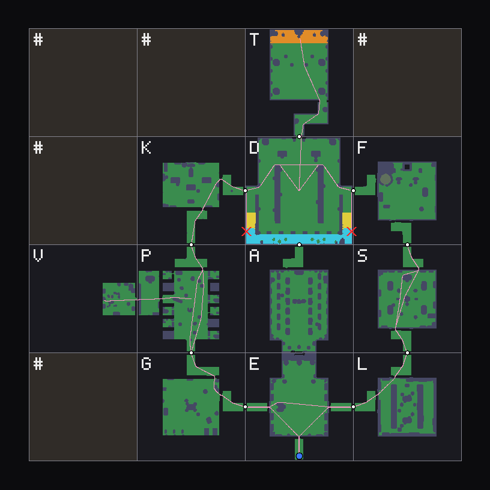
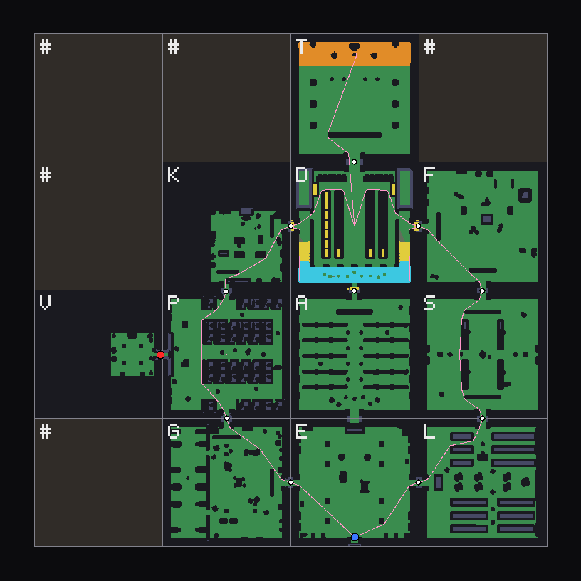
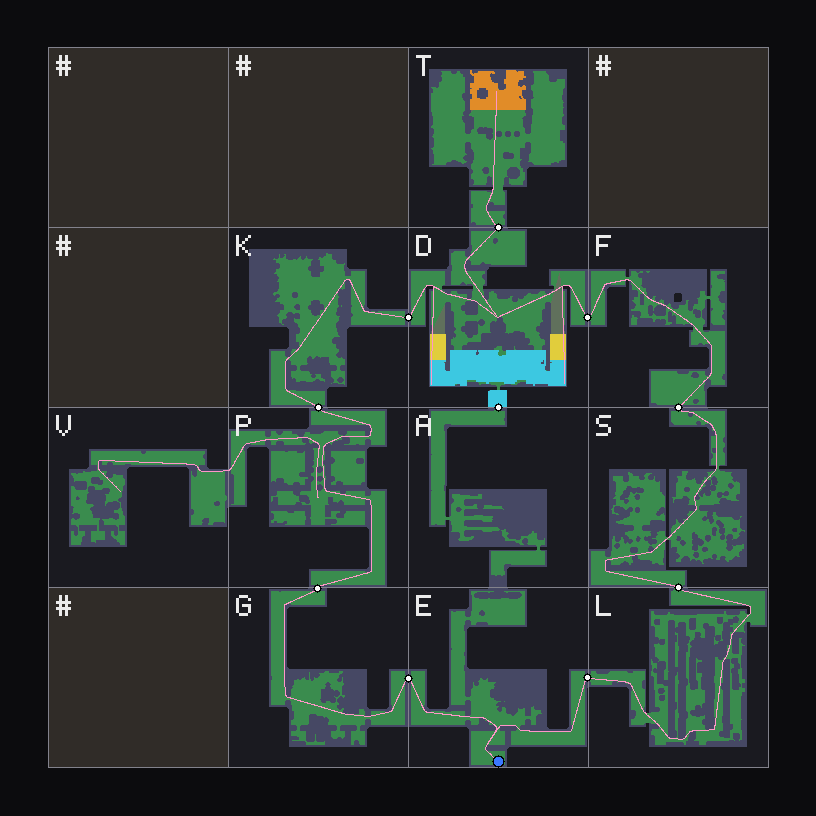
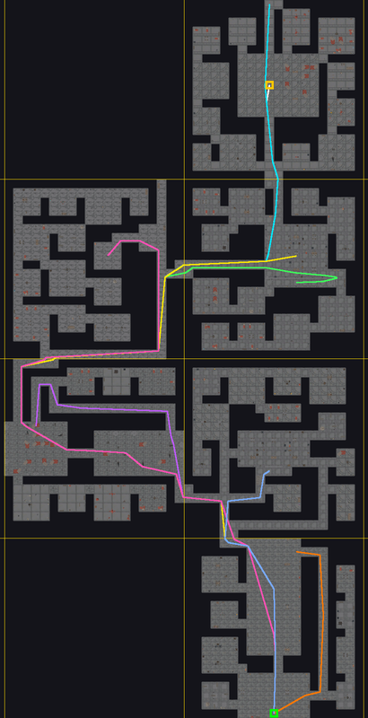

Fable 5.1 · cold
a single headless prompt, effort xhigh
8pass
2fail
1by eye
- Wall clock
- 1 h 29 m
- Tool calls
- 193
- Cost, list price
- $45.41
- Code it wrote
- 15 C# files, 2,707 lines + a shader
One level brief: eleven themed rooms on a 4 × 4 grid of 45 m tiles, with a gallery, a throne stage, a gated armory and a secret vault. Fable 5.1 and Opus 5.5 each built it cold in Unity from the three Synty dungeon packs. Ours built it through the framework twice: as a themed-room level and as a pattern-tile level. Every build is a Unity scene, walked by the same first-person controller and scored by the same conformance kit.
The scores come from one kit: ten automatic checks against level.json, plus one judged by eye. The walker is a person-sized CharacterController (radius 0.35 m, height 1.8 m, step 0.3 m). Costs are at API list price; both cold runs actually ran on a subscription.
level.jsonFinal score in round 5, from the library's own prefabs (see below).
Not scored by the kit. Its checks name 45 m cells, and this level is 3 × 4 slots of 100 m. The kit's walker walked it instead.
The same kit and the same level.json scored all three grid builds. Check 10 is a walk, not a line from the brief.
| # | What the brief requires | Fable | Opus | Rooms |
|---|---|---|---|---|
| 1 | The eleven rooms stand on their cells; every rock cell is solid | pass | pass | pass |
| 2 | Every listed door exists and meets its neighbour; no other openings | pass | pass | pass |
| 3 | The armory gate, with spikes before it, is shut; the armory opens only to the hall | pass | pass | pass |
| 4 | The west and east wings both join the entry hall to the great hall, not through the armory | fail | pass | pass |
| 5 | The vault's one way in is a secret bookcase door from the prison; the vault is on no route | pass | pass | pass |
| 5b | Closed, the bookcase door looks like the bookcases beside it | by eye | by eye | by eye |
| 6 | The throne room has exactly one door, from the great hall | pass | pass | pass |
| 7 | A gallery 5 m up along the hall's south side; a stair at each end, reached without crossing the hall floor | pass | pass | pass |
| 8 | The throne stands on a 1.25 m stage with steps across its front | pass | pass | pass |
| 9 | Prison, guard room, kitchen and vault are low; great hall and throne room are tall | pass | pass | pass |
| 10 | Walk: the controller walks every key route to its end | 4/6 | 6/6 | 6/6 |
The last two failures (gallery landings, kitchen ceiling) were fixed in the room library itself and rebuilt, so the final score comes from the framework's own prefabs.
Each map is the walkable NavMesh at the walker's size, seen from above, with the walked routes drawn on it. The grid is the brief's 4 × 4 layout of 45 m cells.




E entry hall · G guard room · P prison · V vault · K kitchen · D great hall · A armory · T throne room · L library · S study · F forge
The cold runs placed pieces one at a time, straight into the scene. Ours places whole rooms, which nest set pieces, which nest the Synty pieces. So ours puts down far fewer objects but draws on a wider range of pieces.
outermost prefab instances
For rooms: the 11 rooms, the player, and 44 pieces the brief asks for (the portcullis and spikes, the bookcase door, 31 characters and so on). For patterns: one level prefab and the player.
unique leaf assets from the three dungeon packs and PolygonGeneric
Rooms uses 1.5 to 2.2 times the variety of either cold run, on the same 45 m grid.
cubes, capsules, cylinders and spheres made in scripts
This is a design choice, not a flaw. Fable built its rock as 513 flat cubes and its defenders as capsule stand-ins; Opus used real Synty characters. Ours' single primitive is the player capsule.
rooms, set pieces, tiles and pieces, each counted once
Rooms: 11 rooms, 67 set pieces, 438 Synty pieces and 6 player-kit files. Patterns: 1 level, 6 tiles, 178 Synty pieces and 6 player-kit files.
Every row is measured with the same probe, run in batch mode on each saved scene; no scene was saved afterwards. The patterns level covers 300 × 400 m, so its totals are not like-for-like with the three 45 m-grid builds.
| Measure | Fable | Opus | Rooms | Patterns | Ours, both |
|---|---|---|---|---|---|
| Scene | |||||
| Scene file | 8.4 MB | 18.5 MB | 348 KB | 21 KB | — |
| Level data on disk (scene + its own prefabs) | 8.4 MB | 18.5 MB | 17.4 MB | 12.0 MB | 29.4 MB |
| GameObjects, all / active | 3,443 / 3,441 | 8,033 / 7,734 | 9,494 / 8,797 | 5,215 / 5,215 | — |
| Deepest hierarchy | 5 | 16 | 17 | 6 | — |
| Prefabs and pieces | |||||
| Objects placed in the scene (outermost) | 2,555 | 4,929 | 56 | 2 | — |
| Different outermost prefabs | 203 | 292 | 33 | 2 | 34 |
| Prefab files at any depth | 208 | 297 | 522 | 191 | 584 |
| Different leaf assets | 207 | 295 | 439 | 179 | 494 |
| Different Synty pieces | 202 | 291 | 438 | 178 | 493 |
| Renderers outside any prefab | 611 | 84 | 0 | 0 | — |
| Unity primitives | 579 | 74 | 1 | 1 | — |
| Geometry | |||||
| Active renderers | 3,231 | 5,215 | 6,183 | 4,890 | — |
| Triangles drawn | 1.83 M | 3.22 M | 3.82 M | 2.84 M | — |
| Triangles in different meshes | 205,720 | 293,019 | 355,571 | 144,443 | — |
| Different meshes | 210 | 335 | 460 | 189 | 520 |
| Renderers per different mesh | 14.5 | 14.8 | 13.2 | 25.9 | — |
| Materials / textures | 17 / 14 | 20 / 18 | 11 / 15 | 4 / 6 | 11 / 15 |
| Lights, effects, physics | |||||
| Lights | 178 point | 395 point | 458 point + 3 dir. | 1 dir. | — |
| Particle systems | 158 | 244 | 94 | 0 | — |
| Colliders | 2,637 | 1,235 | 6,144 | 4,893 | — |
| Post-processing volumes | 1 | 1 | 0 | 0 | — |
| Effort | |||||
| Code written for this level | 2,707 lines 15 files + shader | 3,254 lines 19 files | 2,056 lines assembler | 169 lines builder | — |
| Wall clock / tool calls | 1:28:48 / 193 | 1:13:33 / 212 | — | — | — |
| Cost at list price | $45.41 | $29.57 | — | — | — |
Where each build's pieces come from. Fable leaned on the base Dungeon pack. Opus and our rooms drew about two-fifths of their variety from Dungeon Realms. Our pattern tiles use the base pack alone. "Generic" is Synty's PolygonGeneric, which the cold-run template also shipped.
share of each build's different leaf assets
share of every active mesh renderer
A fifth of everything Fable draws is a Unity primitive (the red band).
Each build's six most-copied assets. Every build is mostly walls, floors and ceilings. Fable's number one is the Unity cube it used for solid rock.
Names without a tag are from PolygonDungeon, with the SM_Env_ or SM_Prop_ prefix dropped.
The eleven room prefabs, largest first. Each was chosen from the pre-built themed-room library, not made for this level; the reason for each pick is in level.picks.json.
| Room in the brief | Library room | Renderers | Triangles | |
|---|---|---|---|---|
| great hall | Hall gallery · back · feast | 924 | 512 k | |
| kitchen | Kitchen · notch · cooking | 775 | 283 k | |
| study | Alchemy lab · warren · brewing | 763 | 254 k | |
| library | Library · box · open | 615 | 553 k | |
| throne room | Throne room · aisled · court | 501 | 542 k | |
| armory | Armory · racks · stocked | 490 | 430 k | |
| prison | Prison · block · riot | 478 | 251 k | |
| entry hall | Guard room · lobby · manned | 434 | 233 k | |
| guard room | Guard room · watch · manned | 426 | 219 k | |
| forge | Forge · cellar · working | 420 | 237 k | |
| vault | Treasury · lobby · sealed | 284 | 174 k |
The patterns level nests six d-20 pattern tiles, each used once: flanking route (×2), gallery, hidden cache, sniper location and stronghold. Every renderer in it sits exactly three prefabs deep.